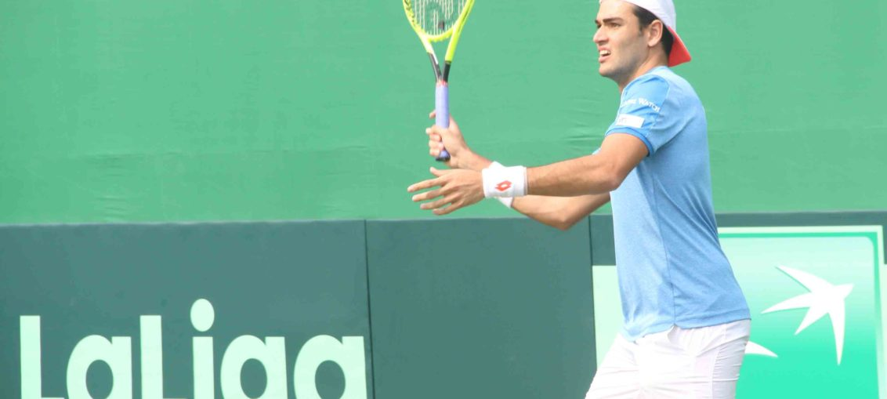

Posted at Date: February 01, 2019
Credit : রাইট স্পোর্টস ওয়েব ডেস্ক
ভারতের ডেভিস-বিশ্বকাপের স্বপ্ন লুটোচ্ছে কাতানেশিওর ঘাসে!

‘কালসিও’ ইতালীয়দের শিরায় শিরায়। আন্দ্রেয়াস সেপ্পি বিরাট সমর্থক এসি মিলানের। মিলান শহরে এসি-র চিরশত্রু এবং একই মাঠ জিউসেপ্পে মেয়াজার অপর পারের বাসিন্দা ইন্তার মিলানে আর্জেন্তিনীয় এলেনিও এরেরা ফুটবলকে দিয়েছিলেন কাতানেশিও। রক্ষণ সামলে বিপক্ষকে ডেকে এনে বিপক্ষের অর্ধে ফাঁকা জায়গা তৈরি করে দ্রুতগতিতে প্রতি-আক্রমণে ধরাশায়ী করে ফেলা যে-কৌশলের পোশাকি নাম ফুটবলে। ডেভিস কাপে ভারত বনাম ইতালি টাইয়ে প্রথম সিঙ্গলসে তারই প্রতিফলন দেখল শতবর্ষে পা-দিতে-চলা সাউথ ক্লাব! টেনিসের সঙ্গে ফুটবলের মিল? অসম্ভব তো নয়! স্পেন এবং বার্সেলোনার জেরার্দ পিকে-র সংস্থা কসমস যখন ডেভিস কাপের সংজ্ঞা পাল্টে দিতে গুরুত্বপূর্ণ ভূমিকা নেয়, ডেভিস কাপের অন্যতম পৃষ্ঠপোষক হিসাবে নাম শোভা পায় ‘লা লিগা’-র, অসম্ভব কেন!
সেপ্পির প্রথম সার্ভিসের গতি ঘন্টায় ১৯০ কিলোমিটার ছোঁয় কম, বেশিরভাগ সময়ই আদেকো সার্ভ স্পিড দেখাচ্ছিল ১৭০ বা ১৮০-র ঘরের কোনও সংখ্যা। এমনও হল বেশ কয়েকবার যখন প্রথম সার্ভ ১৬০ কিলোমিটারের ঘরে। দ্বিতীয় সার্ভ, স্বাভাবিকভাবেই, নিখুঁত হতে চেয়ে, টেনিসের ভাষায় ডবল ফল্ট-এর ফাঁদ এড়াতে চেয়ে, ১৪৫-এর ঘরে। ঘাসের কোর্টে এই গতিতে সার্ভ করে ম্যাচ হাসতে হাসতে জিতে-যাওয়া? রামকুমার রমানাথন প্রথম সার্ভ করছিলেন ২০০-কিলোমিটারের বেশি গতিতেই। কিন্তু, ম্যাচে তাঁর ডবল ফল্ট ৬-বার। তার মধ্যে তিনবার প্রথম সেটের নবম গেমে, যেখানে ব্রেক পেয়ে এগিয়ে যান সেপ্পি। এগিয়ে যায় ইতালিই। আর থামানো যায়নি। দিনের শেষে, মহেশ ভূপতিদের প্রিয় ঘাসের কোর্টে ভারতীয়দের ডেভিস-বিশ্বকাপের স্বপ্ন লুটোচ্ছে ঘাসেই! ৭১ মিনিটে সেপ্পির কাছে হার মেনেছিলেন রামকুমার, ৪-৬, ২-৬ গেমে। আর, ৫৭ মিনিটে প্রজ্ঞেশ গুনেশ্বরনকে ৬-৪, ৬-৩ গেমে ধরাশায়ী করলেন মাত্তেও বেরেত্তিনি। দু’ঘণ্টার একটু বেশি সময়ে মাদ্রিদের টিকিট প্রায় নিশ্চিত করে ফেলল ইতালি। শনিবার বাকি তিন ম্যাচে আর একটি জয় মানেই, ডেভিসের প্রথম বিশ্বকাপে ইতালি, যা জিয়ানলুইগি বুফোঁরা করে দেখাতে পারেননি এক বছরের আগের রাশিয়া বিশ্বকাপে!
সেপ্পির খেলায় ওই ডেকে-এনে-বোকা-বানানোর ছাপ স্পষ্ট। রামকুমার বারবার উঠে এলেন নেটে। সেপ্পির পাসিং শটগুলো বাড়াল অস্বস্তি তাঁর। দ্বিতীয় সেটে তাই বুঝেই উঠতে পারছিলেন না, আক্রমণ করতে নেটে উঠে যাবেন না পড়ে থাকবেন বেসলাইনে। বিপক্ষের মনে এই দ্বিধার জন্ম দেওয়াটাও তো কৌশল। আর ইতালীয়রা কৌশলী হলে তাদের হারানো কঠিন। বিশ্ব-ফুটবল তো জেনেই এসেছে, ইতালীয়দের চেয়ে টেকনিক্যালি দক্ষ এবং ট্যাকাটিক্যালি ওয়াকিবহাল মেলা ভার! দ্বিতীয় সেটেও সেপ্পি যে আহামরি আক্রমণাত্মক খেললেন, মোটেও নয়। রামকুমারের ছন্দ নষ্ট করে সেই নবম গেম নেওয়ার পরই তিনি জানতেন, এই ম্যাচ তাঁর হাত থেকে আর বেরবে না। তিনি তাই একটু বেশি খেললেন, বা খেলালেন! সাউথ ক্লাবের এক ইংরেজ-আভিজাত্য আছে, টেনিসের সঙ্গে, যে-ঐতিহ্যের মোড়ক জড়ানো থাকে। গ্যালারিতে উপস্থিত ছোট-ছোট টেনিস-শিক্ষার্থী বা তাদের মা-বাবার কাছেও ফুটবল কতটা পৌঁছয়, আন্দাজ মুশকিল। যদি পৌঁছত, টেনিসের মাধ্যমে দেশের ফুটবলের জয়গান কী করে গাওয়া যেতে পারে, সংজ্ঞা এবং উদাহরণসহ বুঝিয়ে দেওয়া কতই না সহজ তখন!
মাত্তেও বেরেত্তিনির স্মরণীয় অভিষেক তারপর জলভাত। প্রজ্ঞেশ বাঁহাতি বলে বাড়তি সুবিধা পাওয়া যেতে পারে, ভাবা হয়েছিল। ১৬ বছর পর সাউথ ক্লাবে ডেভিস কাপে ভারতের সেরা সম্ভাবনা শুরুই করেছিলেন দুটি সেটের শুরুতেই সার্ভিস হারিয়ে! সেপ্পির ওই গড়ে দেওয়া শক্ত ভিতের ওপর দাঁড়িয়ে বাইশের মাত্তেও তখন উনত্রিশের প্রজ্ঞেশকে হাতে-কলমে বোঝাচ্ছেন, সার্ভ অ্যান্ড ভলি টেনিস ঠিক কী বস্তু! নিখুঁত প্রথম সার্ভিস, কোর্টের কোণে পৌঁছে-দেওয়া বিপক্ষকে, বাধ্য করে এমন জায়গায় উঁচু হয়ে-আসা বল ফেরাতে যাতে সহজ হয় নেটে দাঁড়িয়ে দাঁড়িয়ে ‘উইনার’ নেওয়া। উইম্বলডনে তিনি প্রথম রাউন্ড পেরিয়েছিলেন গতবার। এভাবে খেলতে থাকলে ৬ ফুট ৫ ইঞ্চির ইতালীয় ২০১৯ উইম্বলডনেও অঘটন ঘটাতেই পারেন কিছু। ভারতের হাতে তা হলে রইল কী? পেনসিল-এর মতো ডবলস! শনি-সকালে নতুন পরীক্ষা। ইতালীয় কোচ আবার এতটাই আত্মবিশ্বাসী এখন যে, চেচ্চিনাতোকে ডবলসেও নামাবেন কিনা ভাবছেন। হাতে যেহেতু এসে গিয়েছেন বাইশের বেরেত্তিনি! চিনের বিরুদ্ধে গত বছরই ডেভিস কাপে প্রথম দিনের শেষে একই অবস্থা ছিল। ভারতকে ম্যাচে ফিরিয়েছিলেন যিনি দ্বিতীয় সকালে, এবার তাঁর বেড়ে-ওঠার ক্লাবে ডেভিস কাপে তিনি ব্রাত্য। যদিও মহেশ ভুপতি দুদিন আগে জোরগলায় জানিয়েছিলেন, তাঁর অনুপস্থিতি কোনওভাবেই সমস্যায় ফেলবে না ভারতকে, শুক্রবার রাতে হেশ-এর ভাবনায় কি একবারও আসবেন না লি, লিয়েন্ডার পেজ?
Top Stories

Calcutta Sports Journalists' Club requests the pleasure of your company at its annual awards functionMore...

Jasprit Bumrah has been declared fit and he will now be available for selection for India's third Test against England at Trent Bridge. More...

Ronaldo has increased Juventus' standing among Europe's elite. More...